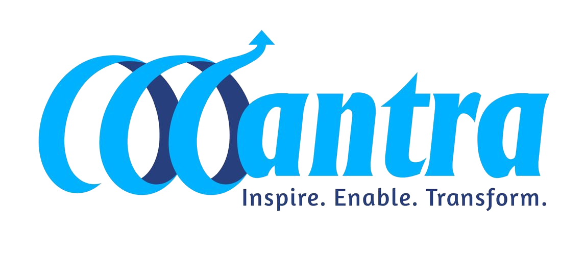

A real-time monitoring dashboard for the Project-Based Learning (PBL) program reaching Grade 6-8 government schools across all 30 districts of Odisha — tracking school coverage, classroom transactions, learning circles, and program implementation as it happens.